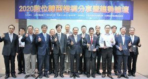

董事長
張榮貴 博士
現職
- Ai3 人工智能股份有限公司 董事長
- 錦華資訊科技股份有限公司 董事長
- 程曦資訊整合股份有限公司 共同創辦人
產業經歷
- 中華民國資訊軟體協會 常務理事
- 中華軟協 AI 大數據智慧應用促進會 會長
- 台灣新東向全球產學研聯盟協進會 理事
- 全球數位產業聯盟協進會（GDDA） 理事
- 台灣數位治理協會 常務理事
- 台灣數位鑒識發展協會 副理事長
- 中華社團領袖聯合總會 顧問（2018–2020）
政府單位委員經歷
- 經濟部 中小企業發展基金管理委員會 委員
- 行政院 政府資料開放諮詢小組第 8 屆委員
- 數位發展部 數位經濟發展諮詢委員會 委員
- 國科會 臺灣 AI 卓越中心（AICoE）策略委員會委員
- 國科會 政府資料開放諮詢小組 委員
- 行政院人事行政總處 政府資料開放諮詢小組 委員
- 數位發展部數位產業署「AI 產業實戰應用人才淬煉計畫」諮議委員
- 經濟部產業人才能力鑑定 iPAS「機器學習工程師」「巨量資料分析師」能力鑑定專家委員
- 經濟部產業發展署「DIGI+Talent 跨域數位人才加速躍升計畫」及「人才循環交流推動計畫」審查委員
- 經濟部產業發展署 AI 智慧應用新世代人才培育計畫 課程諮議委員
- 經濟部 產業技術司法人科專計畫 委員
- 交通部 交通科技產業會報 交通大數據科技產業小組委員（2019–2020）
- 科技部「政府資料開放諮詢小組」委員（2018–2020）
學術單位經歷
- 東吳大學 兼任助理教授
- 致理科技大學 校務發展諮詢委員
- 台北商業大學 資訊與決策研究所課程委員
- 中華民國電腦學會 理事
- 中華民國數位學習學會 理事
- 台北城市科技大學 校務發展諮詢顧問（2019–2020）
- 國立臺北商業大學第 19 任校長遴選委員（社會公正人士代表，2021）